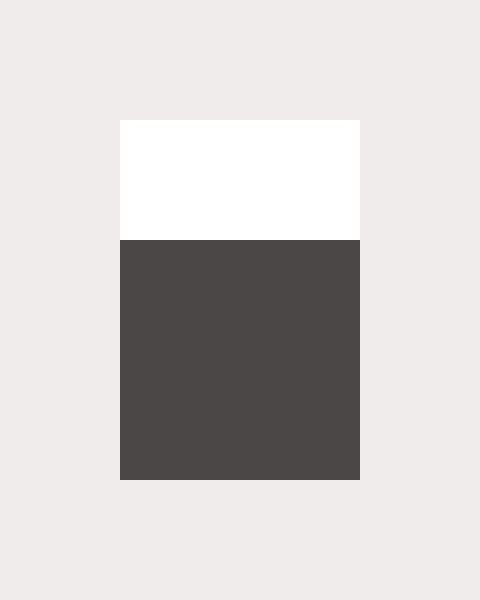

OpenCode
Kilo CodeDifferences, similarities, benchmark & technical comparison
OpenCode Architecture: ┌──────────────────────────┐ │ CLI / TUI │ terminal-ui (Ink + React) │ Server │ Hono HTTP + Server-Sent Events │ Tools │ ripgrep, fff picker, glob, bash │ AI SDK │ ai + @ai-sdk/* (75+ provider) │ Runtime │ Effect functional runtime │ DB │ drizzle-orm + SQLite/PG │ Desktop │ Tauri (Rust) └─────────────────────────┘ Kilo Code Architecture: ┌────────────────────────────────────────────────┐ │ Kilo UX Layer │ streamlined onboarding, UI │ Kilo Gateway & Auth │ model routing, Kilo Pass │ Cloud Agents & CI/CD │ remote execution, --auto │ Kilo Daemon & Console │ background server, web UI │ JetBrains Plugin │ Kotlin native │ OpenCode Server Core (fork) │ shared engine └────────────────────────────────────────────────┘
| Feature | OpenCode | Kilo Code |
|---|---|---|
| Base | Upstream project | OpenCode fork |
| License | MIT | MIT |
| Developer | anomalyco | Kilo Org |
| GitHub Stars | ~182,059 | ~25,500 |
| Forks | 22,506 | 2,800 |
| Contributors | 460+ | smaller team |
| Releases | 830+ | 443 |
| CLI / TUI | Yes | Yes |
| VS Code Extension | Yes | Yes |
| JetBrains Support | No | Yes (Kotlin) |
| Desktop App | Tauri (Beta) | Yes |
| Mobile App | No | Yes |
| Cloud Agents | No | Yes |
| Team Collaboration | No | $15/user/month |
| Code Review | No | Yes |
| CI/CD (--auto) | No | Yes |
| Cross-device Sync | No | Yes |
| Built-in Agents | build, plan, general | Code, Plan, Ask, Debug, Review |
| Agent Language | TypeScript (anomalyco) | TypeScript (Kilo Org fork) |
| Agent Colors | build=purple, plan=cyan | Code=green, Plan=cyan, Ask=yellow, Debug=red, Review=purple |
| Subagent System | general (built-in) | No (flat hierarchy) |
| Custom Agent/Mode | Yes | Yes |
| Model Support | 75+ providers | 500+ models (Gateway) |
| Auto Model Routing | No | Yes |
| BYOK | Yes | Yes |
| Free Models | Included | Included |
| Subscription | OpenCode Go $5-10/mo | Kilo Pass $19-199/mo |
| Managed Gateway | Zen (curated) | Kilo Gateway ($0+provider) |
| Enterprise | Zen workspaces beta | SSO/SCIM, audit logs |
| MCP Support | Yes | Yes + MCP Marketplace |
| Context Management | Clean, selective | Broad, comprehensive |
| Data Privacy | Privacy-first, code not stored | Cloud features process data |
| Architecture | Client-server (Hono+Effect) | OpenCode core + Kilo layer |
| Desktop Technology | Tauri (Rust) | Unknown (custom) |
Kilo Code's official model evaluation results. Each model was tested on 89 terminal tasks using Kilo's real agent harness. Cost includes reasoning tokens, re-sent context, and tool call overhead.
| # | Model | Provider | Language | Completion % | Cost | Value |
|---|---|---|---|---|---|---|
| 1 | GPT-5.5 | OpenAI (🇺🇸 USA) | Python + PyTorch | %74.2 | $72.63 | |
| 2 | Claude Opus 4.7 | Anthropic (🇺🇸 USA) | Python + JAX | %70.1 | $100.51 | |
| 3 | Claude Opus 4.6 | Anthropic (🇺🇸 USA) | Python + JAX | %67.6 | $85.19 | |
| 4 | Kimi K2.5 | Moonshot AI (🇨🇳 China) | Python + PyTorch | %64.7 | $104.49 | |
| 5 | Gemini 3.1 Pro | Google DeepMind (🇺🇸 USA) | Python + JAX | %60.7 | $32.94 | |
| 6 | Claude Sonnet 4.6 | Anthropic (🇺🇸 USA) | Python + JAX | %59.6 | $36.19 | |
| 7 | GPT-5 | OpenAI (🇺🇸 USA) | Python + PyTorch | %55.1 | $53.37 | |
| 8 | DeepSeek V4 Flash | DeepSeek (🇨🇳 China) | Python + Mojo | %54.6 | $20.65 | |
| 9 | Kimi K2.6 | Moonshot AI (🇨🇳 China) | Python + PyTorch | %54.4 | $24.84 | |
| 10 | Gemini 2.5 Pro | Google DeepMind (🇺🇸 USA) | Python + JAX | %53.0 | $26.21 | |
| 11 | Qwen3-235B | Alibaba Cloud (🇨🇳 China) | Python + PyTorch | %50.6 | $30.70 | |
| 12 | MiniMax M2.7 | MiniMax (🇨🇳 China) | Python + PyTorch | %49.4 | $23.98 | |
| 13 | GLM-5.2 | Zhipu AI (Z.AI) (🇨🇳 China) | Python + PyTorch | %47.6 | $4.92 | |
| 14 | DeepSeek V4 | DeepSeek (🇨🇳 China) | Python + Mojo | %47.6 | $10.35 | |
| 15 | Claude Sonnet 4.5 | Anthropic (🇺🇸 USA) | Python + JAX | %46.7 | $19.60 | |
| 16 | GPT-4.7 | OpenAI (🇺🇸 USA) | Python + PyTorch | %44.0 | $15.91 | |
| 17 | Llama 5.1 (405B) | Meta (🇺🇸 USA) | Python + PyTorch | %32.6 | $40.55 | |
| 18 | Mythos 5 | Anthropic (🇺🇸 USA) | Python + JAX | %28.1 | $30.82 |
Highest success rate at lowest cost:
Highest completion rate (regardless of cost):
OpenCode (anomalyco) is the groundbreaking upstream project in the AI coding agent space. With 182k GitHub stars, 460+ contributors, and 830+ releases, it has the largest community. Its 3 built-in agents (build, plan, general) are written in TypeScript. With its client-server architecture, clean context management, and privacy-first approach, it is ideal for terminal and SSH workflows.
Kilo Code (Kilo Org) is a fork built on OpenCode's solid foundation. Its 5 built-in agents (Code, Plan, Ask, Debug, Review) are developed in TypeScript. It adds enterprise features like cloud agents, JetBrains support (Kotlin native), 500+ models, Auto Model Routing, mobile app, team collaboration, and CI/CD integration. It provides transparent model performance data via KiloBench.
▶ Your choice depends on your needs: For terminal-first, privacy-first, individual use, OpenCode is ideal; for JetBrains, cloud, team, and multi-platform needs, Kilo Code is the better fit. Both are MIT-licensed and free; you only pay for model usage.